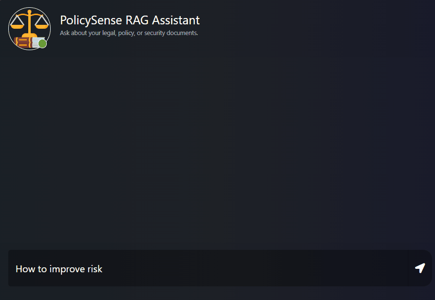

PolicySense RAG Assistant
Production-Grade Compliance System
Overview
Designed and deployed PolicySense, a production-grade RAG (Retrieval-Augmented Generation) system for compliance, safety, and certifications. This enterprise system transformed how engineering and compliance teams access and search through complex legal documentation, reducing research time from hours to seconds.
Impact
- Reduced compliance research time from 3 hours to under 30 seconds (99.7% reduction)
- Increased internal audit accuracy by 40%
- Served engineering and compliance teams across the organization
- Enabled real-time compliance checking for ongoing projects
Technical Implementation
Built an end-to-end pipeline using modern AI/ML technologies:
- LangChain - Orchestrated RAG pipeline with document processing and retrieval logic
- FastAPI - RESTful API for system integration and frontend consumption
- Pinecone Vector Database - Semantic search over embedded legal documents
- OpenAI API - LLM for generating accurate, context-aware responses
- AWS - Cloud infrastructure for scalable deployment
- CI/CD via GitHub Actions - Automated testing and deployment workflows
Key Features
- Semantic search across large volumes of legal and compliance documents
- Context-aware Q&A system for compliance queries
- Production-ready architecture with monitoring and error handling
- Secure access controls for sensitive compliance information
- Scalable infrastructure to handle enterprise-level usage
Technologies
Stack: LangChain, FastAPI, Pinecone, OpenAI API, AWS, Docker, GitHub Actions, CI/CD, Python